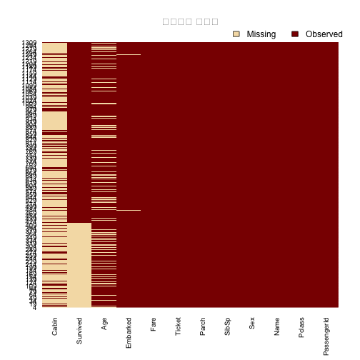
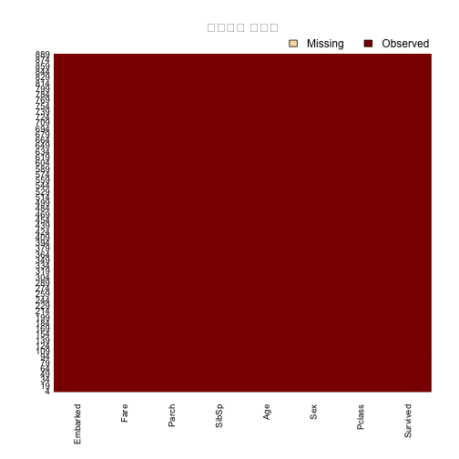

xwMOOC 기계학습
전통방식 모형개발 - 타이타닉 생존 데이터
학습목표
- 전통방식 모형개발 방식을 타이타닉 생존데이터에 적용한다.
- CMM 3수준에 해당되는 모형개발 방식으로 간주할 수도 있다.
1. 타이타닉 생존 데이터 1
타이타닉 생존데이터는 영화로도 만들어지고, 여러가지 에피소드가 많이 들어있는 소재로 데이터 과학과 통계학적인 측면에서 바라보면 범주형 데이터로 생존여부가 종속변수로 녹아져 있어, 예측모형으로 적합시키기도 적절한 데이터이기도 하다.
1.1. 타이타닉 생존 데이터 가져오기 2
캐글 타이타닉 데이터를 다운로드 받아 로컬컴퓨터에서 불러읽어오거나, GitHub 사이트에서 캐글 타이타닉 데이터를 올려놓은 것을 바로 불러온다. 캐글 타이나틱 생존 데이터는 train.csv와 test.csv로 나눠져 있는데 일단 모두 합쳐 하나의 데이터셋으로 만들고 난후에 동일하게 전처리 작업을 하고 전통적 방식으로 예측하는 방법을 전개한다.
| 변수명 | 변수명 설명 |
|---|---|
| survival | Survival (0 = No; 1 = Yes) |
| pclass | Passenger Class (1 = 1st; 2 = 2nd; 3 = 3rd) |
| name | Name |
| sex | Sex |
| age | Age |
| sibsp | Number of Siblings/Spouses Aboard |
| parch | Number of Parents/Children Aboard |
| ticket | Ticket Number |
| fare | Passenger Fare |
| cabin | Cabin |
| embarked | Port of Embarkation (C = Cherbourg; Q = Queenstown; S = Southampton) |
survival 이 종속변수이며, 나머지를 예측변수로 사용해서 생존을 예측하는 모형을 개발한다.
##========================================================
## 01. 데이터 준비
##========================================================
# Titanic: Machine Learning from Disaster, https://www.kaggle.com/c/titanic/data
suppressMessages(library(readr))
suppressMessages(library(dplyr))
titanic.train.df <- read_csv("https://raw.githubusercontent.com/agconti/kaggle-titanic/master/data/train.csv")
titanic.test.df <- read_csv("https://raw.githubusercontent.com/agconti/kaggle-titanic/master/data/test.csv")
titanic <- bind_rows(titanic.train.df, titanic.test.df)1.2. 데이터 정제
타이타닉 생존데이터를 불러온 다음 현황을 파악하고, 결측값에 대한 대응방안을 마련한다. 예를 들어, 결측값이 너무 많은 경우 변수(Cabin) 자체를 제거한다. Name, Ticket처럼 관측점마다 유일한 변수는 정보로서 의미가 없기 때문에 이것도 제거한다. Age 변수는 평균을 매워넣는 것으로 하고, 상대적으로 적은 결측값이 있는 관측점은 Embarked, Fare, Survived는 관측점을 제거하는 방식으로 정제 작업을 수행한다.
특히, Amelia 팩키지의 missmap 함수를 사용해서 결측값 진행 작업을 바로 시각적으로 확인한다.
##========================================================
## 02. 데이터 정제
##========================================================
# 2.1. 현황 파악
summary(titanic) PassengerId Survived Pclass Name
Min. : 1 Min. :0.0000 Min. :1.000 Length:1309
1st Qu.: 328 1st Qu.:0.0000 1st Qu.:2.000 Class :character
Median : 655 Median :0.0000 Median :3.000 Mode :character
Mean : 655 Mean :0.3838 Mean :2.295
3rd Qu.: 982 3rd Qu.:1.0000 3rd Qu.:3.000
Max. :1309 Max. :1.0000 Max. :3.000
NA's :418
Sex Age SibSp Parch
Length:1309 Min. : 0.17 Min. :0.0000 Min. :0.000
Class :character 1st Qu.:21.00 1st Qu.:0.0000 1st Qu.:0.000
Mode :character Median :28.00 Median :0.0000 Median :0.000
Mean :29.88 Mean :0.4989 Mean :0.385
3rd Qu.:39.00 3rd Qu.:1.0000 3rd Qu.:0.000
Max. :80.00 Max. :8.0000 Max. :9.000
NA's :263
Ticket Fare Cabin
Length:1309 Min. : 0.000 Length:1309
Class :character 1st Qu.: 7.896 Class :character
Mode :character Median : 14.454 Mode :character
Mean : 33.295
3rd Qu.: 31.275
Max. :512.329
NA's :1
Embarked
Length:1309
Class :character
Mode :character
sapply(titanic, function(x) sum(is.na(x)))PassengerId Survived Pclass Name Sex Age
0 418 0 0 0 263
SibSp Parch Ticket Fare Cabin Embarked
0 0 0 1 1014 2
sapply(titanic, function(x) length(unique(x)))PassengerId Survived Pclass Name Sex Age
1309 3 3 1307 2 99
SibSp Parch Ticket Fare Cabin Embarked
7 8 929 282 187 4
suppressMessages(library(Amelia))
missmap(titanic, main = "결측값과 관측값")
# 2.2. 결측값에 대한 응징
# 분석에 사용될 변수만 선정
titanic <- titanic %>%
select(Survived, Pclass, Sex, Age, SibSp, Parch, Fare, Embarked) %>% # 결측값이 많은 Cabin과 이름, Ticket은 제거
mutate(Age = ifelse(is.na(Age), mean(Age, na.rm=TRUE), Age)) %>% # 나이를 평균값으로 치환
filter(!is.na(Embarked)) %>% # 결측값 2개 행 제거
filter(!is.na(Fare)) %>% # 결측값 1개 행 제거
filter(!is.na(Survived)) # 결측값 418개 행 제거
missmap(titanic, main = "결측값과 관측값")
1.3. 예측모형 적용
caret 팩키지 createDataPartition 함수를 사용해서 7:3으로 훈련데이터와 검증데이터로 구분한다.
glm 함수에 family=binomial(link='logit') 인자를 넣어 이항회귀모형을 적합시킨다. 특히, 전체 변수를 모두 넣어 Survived ~. 생존을 예측하는 모형을 구축한다.
변수를 선정하는 방법은 여러가지가 있으나, 먼저 anova함수를 사용해서 포화모델에서 유의적인 변수와 그렇지 않는 변수를 구별한다. 비유의적인 변수를 제거하고 logit.reduced.m 축소된 이항회귀모형을 개발한다.
이항회귀식에는 \(R^2\) 결정계수가 큰 의미가 없다고 주장하는 경우도 있으나, pscl 팩키지의 기능을 사용하여 계산해본다.
ROCR 팩키지를 사용해서 포화모형과 축소모형간에 차이가 있는지 ROC 면적과 더불어 ROC 곡선을 도식화하여 비교한다.
두 모형간에 성능의 차이는 없어 보이며, 4개 모형이 사용된 축약된 모형이 포화모형과 거의 비슷한 성능을 내고 있다.
##========================================================
## 03. 모형 적합
##========================================================
##
suppressMessages(library(caret))
#---------------------------------------------------------
# 3.1. 훈련데이터와 검증데이터 분리
train.id <- createDataPartition(titanic$Survived, p = 0.7)[[1]]
titanic.train.df <- titanic[ train.id,]
titanic.test.df <- titanic[-train.id,]
#---------------------------------------------------------
# 3.1. 선형회귀 적합
logit.full.m <- glm(Survived ~.,family=binomial(link='logit'), data=titanic.train.df)
summary(logit.full.m)
Call:
glm(formula = Survived ~ ., family = binomial(link = "logit"),
data = titanic.train.df)
Deviance Residuals:
Min 1Q Median 3Q Max
-2.4313 -0.6202 -0.4143 0.6357 2.3568
Coefficients:
Estimate Std. Error z value Pr(>|z|)
(Intercept) 4.667407 0.660690 7.064 1.61e-12 ***
Pclass -1.007740 0.169957 -5.929 3.04e-09 ***
Sexmale -2.723194 0.240673 -11.315 < 2e-16 ***
Age -0.027363 0.009402 -2.910 0.00361 **
SibSp -0.389763 0.134999 -2.887 0.00389 **
Parch -0.156524 0.147544 -1.061 0.28875
Fare 0.002806 0.002664 1.054 0.29207
EmbarkedQ 0.254004 0.451591 0.562 0.57380
EmbarkedS -0.425267 0.277755 -1.531 0.12575
---
Signif. codes: 0 '***' 0.001 '**' 0.01 '*' 0.05 '.' 0.1 ' ' 1
(Dispersion parameter for binomial family taken to be 1)
Null deviance: 823.67 on 622 degrees of freedom
Residual deviance: 546.80 on 614 degrees of freedom
AIC: 564.8
Number of Fisher Scoring iterations: 5
#---------------------------------------------------------
# 3.2. 변수선택
anova(logit.full.m, test="Chisq")Analysis of Deviance Table
Model: binomial, link: logit
Response: Survived
Terms added sequentially (first to last)
Df Deviance Resid. Df Resid. Dev Pr(>Chi)
NULL 622 823.67
Pclass 1 69.080 621 754.59 < 2.2e-16 ***
Sex 1 178.833 620 575.75 < 2.2e-16 ***
Age 1 5.110 619 570.64 0.02379 *
SibSp 1 15.671 618 554.97 7.537e-05 ***
Parch 1 1.097 617 553.88 0.29485
Fare 1 2.301 616 551.57 0.12928
Embarked 2 4.773 614 546.80 0.09197 .
---
Signif. codes: 0 '***' 0.001 '**' 0.01 '*' 0.05 '.' 0.1 ' ' 1
#---------------------------------------------------------
# 3.3. 최적모형
logit.reduced.m <- glm(Survived ~ Pclass+Sex+Age+SibSp, family=binomial(link='logit'), data=titanic.train.df)
summary(logit.reduced.m)
Call:
glm(formula = Survived ~ Pclass + Sex + Age + SibSp, family = binomial(link = "logit"),
data = titanic.train.df)
Deviance Residuals:
Min 1Q Median 3Q Max
-2.4848 -0.6207 -0.4262 0.6051 2.4995
Coefficients:
Estimate Std. Error z value Pr(>|z|)
(Intercept) 4.625832 0.566180 8.170 3.08e-16 ***
Pclass -1.082819 0.141618 -7.646 2.07e-14 ***
Sexmale -2.736644 0.230971 -11.848 < 2e-16 ***
Age -0.027605 0.009235 -2.989 0.002797 **
SibSp -0.447315 0.127738 -3.502 0.000462 ***
---
Signif. codes: 0 '***' 0.001 '**' 0.01 '*' 0.05 '.' 0.1 ' ' 1
(Dispersion parameter for binomial family taken to be 1)
Null deviance: 823.67 on 622 degrees of freedom
Residual deviance: 554.97 on 618 degrees of freedom
AIC: 564.97
Number of Fisher Scoring iterations: 5
#---------------------------------------------------------
# 3.3. R^2 결정계수
suppressMessages(library(pscl))
pR2(logit.full.m) llh llhNull G2 McFadden r2ML
-273.4008118 -411.8332933 276.8649629 0.3361372 0.3587950
r2CU
0.4892052
pR2(logit.reduced.m) llh llhNull G2 McFadden r2ML
-277.4863222 -411.8332933 268.6939422 0.3262169 0.3503298
r2CU
0.4776632
#---------------------------------------------------------
# 3.4. 모형 평가
suppressMessages(library(ROCR))
# 전체 모형
logit.full.pred <- predict(logit.full.m, newdata=titanic.test.df, type="response")
logit.full.pr <- prediction(logit.full.pred, titanic.test.df$Survived)
logit.full.prf <- performance(logit.full.pr, measure = "tpr", x.measure = "fpr")
plot(logit.full.prf)# ROC 면적
logit.full.auc <- performance(logit.full.pr, measure = "auc")
logit.full.auc <- logit.full.auc@y.values[[1]]
logit.full.auc[1] 0.8468524
# 축소 모형
logit.reduced.pred <- predict(logit.reduced.m, newdata=titanic.test.df, type="response")
logit.reduced.pr <- prediction(logit.reduced.pred, titanic.test.df$Survived)
logit.reduced.prf <- performance(logit.reduced.pr, measure = "tpr", x.measure = "fpr")
plot(logit.reduced.prf)
# ROC 면적
logit.reduced.auc <- performance(logit.reduced.pr, measure = "auc")
logit.reduced.auc <- logit.reduced.auc@y.values[[1]]
logit.reduced.auc[1] 0.8479692
#---------------------------------------------------------
# 3.5. ROC 면적비교
plot(logit.full.prf)
plot(logit.reduced.prf, add=TRUE, col="red")
logit.full.auc[1] 0.8468524
logit.reduced.auc[1] 0.8479692
1.4. 자동 모형 선정 방법
만약 \(p\)개 변수가 있다면 \(2^p\) 만큼 가능한 모형이 존재한다. 모형을 모두 적합시켜 \(2^p\) 모형중에서 성능 등 기준조건을 만족하는 최적의 모형을 선정한다. 경우의 수가 너무 많고, 성능이 비슷한 모형을 반복적으로 개발할 우려도 있고 해서, 기준조건(Criterion-based) 방법으로 통해 변수를 추출해 나간다. 즉, 가장 성능이 좋은 변수부터 선택해 나가면서 복잡성과 성능을 최적화한다. 가장 일반적으로 많이 사용되는 방식이 \(AIC(Akaike Information Criterion)\), \(BIC(Bayes Information Criterion)\)을 들 수 있다.
\[AIC = -2 ln(L) + 2k \] \[BIC = -2 ln(L) + k ln(n) \]
\(L\)은 모형에 대한 우도함수 최대값이고, \(k\)는 모형에 사용된 추정모수갯수, \(n\)은 관측점 갯수가 된다.
##========================================================
## 04. 변수선택 모형 선정
##========================================================
##
logit.null.m <- glm(Survived ~1, family=binomial(link='logit'), data=titanic.train.df)
logit.full.m <- glm(Survived ~., family=binomial(link='logit'), data=titanic.train.df)
logit.bic.m <- step(logit.null.m, scope=formula(logit.full.m), direction="both", criterion="BIC", k=log(nrow(titanic.train.df)))Start: AIC=830.1
Survived ~ 1
Df Deviance AIC
+ Sex 1 638.56 651.43
+ Pclass 1 754.59 767.46
+ Fare 1 779.68 792.55
+ Embarked 2 802.96 822.26
<none> 823.67 830.10
+ SibSp 1 819.19 832.06
+ Parch 1 821.96 834.83
+ Age 1 823.35 836.22
Step: AIC=651.43
Survived ~ Sex
Df Deviance AIC
+ Pclass 1 575.75 595.06
+ Fare 1 616.23 635.53
+ SibSp 1 621.54 640.84
+ Embarked 2 623.91 649.65
<none> 638.56 651.43
+ Parch 1 632.62 651.92
+ Age 1 637.62 656.93
- Sex 1 823.67 830.10
Step: AIC=595.06
Survived ~ Sex + Pclass
Df Deviance AIC
+ SibSp 1 564.30 590.03
<none> 575.75 595.06
+ Age 1 570.64 596.38
+ Parch 1 571.41 597.15
+ Embarked 2 566.78 598.95
+ Fare 1 575.28 601.02
- Pclass 1 638.56 651.43
- Sex 1 754.59 767.46
Step: AIC=590.03
Survived ~ Sex + Pclass + SibSp
Df Deviance AIC
+ Age 1 554.97 587.15
<none> 564.30 590.03
+ Fare 1 562.15 594.33
- SibSp 1 575.75 595.06
+ Parch 1 563.50 595.67
+ Embarked 2 557.76 596.36
- Pclass 1 621.54 640.84
- Sex 1 752.69 772.00
Step: AIC=587.15
Survived ~ Sex + Pclass + SibSp + Age
Df Deviance AIC
<none> 554.97 587.15
- Age 1 564.30 590.03
+ Fare 1 553.36 591.97
+ Parch 1 553.88 592.48
+ Embarked 2 548.78 593.82
- SibSp 1 570.64 596.38
- Pclass 1 621.54 647.27
- Sex 1 733.19 758.93
logit.aic.m <- step(logit.null.m, scope=formula(logit.full.m), direction="both", criterion="AIC", k=2)Start: AIC=825.67
Survived ~ 1
Df Deviance AIC
+ Sex 1 638.56 642.56
+ Pclass 1 754.59 758.59
+ Fare 1 779.68 783.68
+ Embarked 2 802.96 808.96
+ SibSp 1 819.19 823.19
<none> 823.67 825.67
+ Parch 1 821.96 825.96
+ Age 1 823.35 827.35
Step: AIC=642.56
Survived ~ Sex
Df Deviance AIC
+ Pclass 1 575.75 581.75
+ Fare 1 616.23 622.23
+ SibSp 1 621.54 627.54
+ Embarked 2 623.91 631.91
+ Parch 1 632.62 638.62
<none> 638.56 642.56
+ Age 1 637.62 643.62
- Sex 1 823.67 825.67
Step: AIC=581.75
Survived ~ Sex + Pclass
Df Deviance AIC
+ SibSp 1 564.30 572.30
+ Embarked 2 566.78 576.78
+ Age 1 570.64 578.64
+ Parch 1 571.41 579.41
<none> 575.75 581.75
+ Fare 1 575.28 583.28
- Pclass 1 638.56 642.56
- Sex 1 754.59 758.59
Step: AIC=572.3
Survived ~ Sex + Pclass + SibSp
Df Deviance AIC
+ Age 1 554.97 564.97
+ Embarked 2 557.76 569.76
+ Fare 1 562.15 572.15
<none> 564.30 572.30
+ Parch 1 563.50 573.50
- SibSp 1 575.75 581.75
- Pclass 1 621.54 627.54
- Sex 1 752.69 758.69
Step: AIC=564.97
Survived ~ Sex + Pclass + SibSp + Age
Df Deviance AIC
+ Embarked 2 548.78 562.78
<none> 554.97 564.97
+ Fare 1 553.36 565.36
+ Parch 1 553.88 565.88
- Age 1 564.30 572.30
- SibSp 1 570.64 578.64
- Pclass 1 621.54 629.54
- Sex 1 733.19 741.19
Step: AIC=562.78
Survived ~ Sex + Pclass + SibSp + Age + Embarked
Df Deviance AIC
<none> 548.78 562.78
+ Fare 1 547.95 563.95
+ Parch 1 548.04 564.04
- Embarked 2 554.97 564.97
- Age 1 557.76 569.76
- SibSp 1 561.65 573.65
- Pclass 1 609.59 621.59
- Sex 1 715.28 727.28
logit.bic.m
Call: glm(formula = Survived ~ Sex + Pclass + SibSp + Age, family = binomial(link = "logit"),
data = titanic.train.df)
Coefficients:
(Intercept) Sexmale Pclass SibSp Age
4.62583 -2.73664 -1.08282 -0.44731 -0.02761
Degrees of Freedom: 622 Total (i.e. Null); 618 Residual
Null Deviance: 823.7
Residual Deviance: 555 AIC: 565
logit.aic.m
Call: glm(formula = Survived ~ Sex + Pclass + SibSp + Age + Embarked,
family = binomial(link = "logit"), data = titanic.train.df)
Coefficients:
(Intercept) Sexmale Pclass SibSp Age
4.89519 -2.67361 -1.09774 -0.40635 -0.02742
EmbarkedQ EmbarkedS
0.29854 -0.46714
Degrees of Freedom: 622 Total (i.e. Null); 616 Residual
Null Deviance: 823.7
Residual Deviance: 548.8 AIC: 562.8